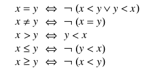
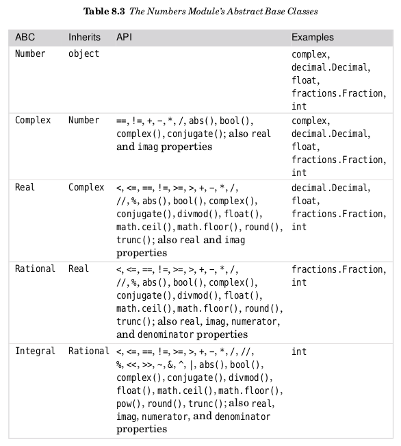
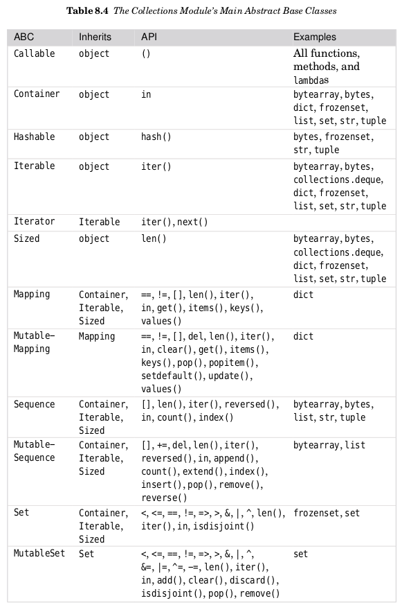

python3
Table of Contents
- 1. Rapid Introduction to Procedural Programming
- 2. Data Types
- 3. Collection Data Types
- 4. Control Structures and Functions
- 5. Modules
- 5.1. Modules and Packages
- 5.2. Overiew of Python's Standard Library
- 5.2.1. String Handling
- 5.2.2. Command-Line Programming
- 5.2.3. Mathematics and Numbers
- 5.2.4. Times and Dates
- 5.2.5. Algorithms and Collection Data Types
- 5.2.6. File Formats, Encodings, and Data Persistence
- 5.2.7. File, Directory, and Process Handling
- 5.2.8. Networking and Internet Programming
- 5.2.9. XML
- 5.2.10. Other Modules
- 6. Object-Oriented Programming
- 7. File Handing
- 8. Advanced Programming Techniques
- 9. Debugging, Testing, and Profiling
- 10. Processes and Threading
- 11. Networking
- 12. Database Programming
- 13. Regular Expressions
- 14. Introduction to Parsing
- 15. Introduction to GUI Programming
1 Rapid Introduction to Procedural Programming
1.1 Creating and Running Python Programs
Be default, Python files are assumed to use the UTF-8 character encoding.
Python files normally have an extension of .py.
Python GUI (Graphical User Interface) programs usually have an extension of .pyw.
Comments begin with a # and continure to the end of the line.
Python ignores blank lines, but they are often useful to humans to break up large blocks of code to make them easier to read.
Each statement encountered in a .py file is executed in turn, starting with the first one and progressing line by line.
This is different from C++ and Java, which have a particular function or method with a special name where they start from.
Python programs are executed by the Python interpreter.
On Unix, when a program is invoked in the console, the file's first two bytes are read.
If these bytes are the ASCII charaters #!,
the shell assumes that the file is to be executed by an interpreter and
that the file's first line specifies which interpreter to use.
This line is called the shebang (shell execute) line, and if present must be the first line in the file.
The shebang line is commonly written in one of two forms:
#!/usr/bin/python3 #!/usr/bin/env python3
first form: the specified interpreter is used.
second form: the first python3 interpreter found in the shell's current environment is used.
The first form may be necessary for Python programs that are to be run by a web server.
The second form is more versatile because it allows for the possibility that the Python3 interpreter is not located in /usr/bin.
1.2 Python's "Beautiful Heart"
1.2.1 Data Types
int
str
Python's integers is limited only by machine memory, not by a fixed number of bytes.
Traditionally, Python Shells use >>> as their prompt.
In Python a character is simply a string of length 1.
To convert a data item from one type to another we can use:
dataType(item)
int and str are immutable.
1.2.2 Object References
Python doesn't have variables as such, but instead has object references.
syntax:
objectReference = value
The = operator binds an object reference to an object in memory.
The names used for object references (called identifiers) have a few restrictions:
- not same as Python's keywords
- must start with a letter or an underscore and be folowed by zero or more nonwhitespace letter, underscore, or digit characters.
- no length limit.
Python uses dynamic typing, which means that an object reference can be rebound to refer to a different object at any time.
the type() function returns the data type of the data item.
1.2.3 Collection Data Types
Python tuples and lists can be used to hold any number of data items of any data types.
tuple is immutable
list is mutable
Tuples are created using commas (,).
An empty tuple is created by using empty parentheses, ().
The comma is also used to seperate arguments in function calls,
so if we want to pass a tuple literal as an argument we must enclose it in parentheses to avoid confusion.
One way to creat a list is to use square brackets ([]).
An empty list is created by using empty brackets, [].
lists and tuples don't store data items at all, but rather object references.
collection data types are objects.
In procedural programming we call functions and often pass in data items as arguments.
>>> len(("one",)) # 1
All Python data items are objects (also called instances) of a particular data type (alse called a class).
Python has conventional functions called like this:
functionName(arguments);
and methods which are called like this:
objectName.methodName(arguments).
The dot ("access attribute") operator is used to access an object's attributes.
1.2.4 Logical Operations
Python provides four sets of logical operations.
- The Identity Operator (is)
identity comparsion is very fast:
needs to compare only the memory addresses of the objects – the same address means the same object.
The purpose of the identity operator is to see whether two objects references refer to the same object, or to see whether an object is None.
- Comparison Operators
< less than;
<= less than or equal to;
= equal to; !not equal to;
>= greater than or equal to
> greater than.
These operators compare object values.
Python's comparison operators can be chained:
>>> a=9
>>> 0 <= a <= 10 #True
- The Memebership Operator (in)
For data types that are sequences or collections, we can test for membership using the in operator,
and for nonmembership using the not in operator.
- Logical Operators (or, and, not)
Both "and" and "or" use short-circuit logic and return the operand that determined the result.
The not unary operator evaluates its arguments in a Boolean context and always returns a Boolean result.
1.2.5 Control Flow Statements
The flow of control can be diverted by:
a function or method call,
a control structure,
an exception
A Boolean expression is anything that can be evaluated to produce a Boolean value (Ture or False).
Such an expression evaluates to False if it is
the predefined constant False,
the special object None,
an empty sequence or collection,
or a numberic data item of value 0,
anything else is considered to be True.
a block of code, that is, a sequence of one or more statements, is called a suite.
Because some of Python's syntax requires that a suite be present,
Python provides the keyword "pass" which is a statement that does nothing and that can be used
where a suite is required but where no processing is necessary.
- The if Statement
the general syntax:
if boolean_expression1: suite1 elif boolean_expression2: suite2 ... elif boolean_expressionN: suiteN else: else_suiteColons are used with "else", "elif", and essentially in any other place where a suite is to follow.
Python uses indentation to signify its block stuctures.
The Python style guidelines recommented four spaces per level of indentation, and only spaces (no tabs)
- The while Statement
syntax:
while boolean_expression: suitesupport break and continue
- The for … in statement
syntax:
for variable in iterable: suitesupport break and continue
An iterable is any data type that can be iterated over, and including strings, lists, tuples, and Python's other collection data type.
- Basic Exception Handling
An exception is an object like any other Python object, and when converted to a string, the exception produces a message text.
syntax:
try: try_suite except exception1 as variable1: exception_suite1 ... except exceptionN as variableN: exception_suiteNWe prefer to group the exceptions together at the end to keep the main processing as uncluttered as possible.
1.2.6 Arithmetic Operators
binary operators for the four basic mathematical operations:
+,-,*,/
Many Python data types can be used with augmented assignment operators such as += and *=.
- can be used both as a unary operator (negation) and as a binary operator (subtraction).
The devision operator produces a floating-point value, not an integer.
If we need an integer result, we can use the truncating division operator //.
When an augmented assignment operator is used on an immutable object,
the operation is performed, and an object holding the result is created;
and then the target object reference is re-bound to refer to the result object rather than the object it referred to.
Since Python's syntax cleverly hides the distinction between mutable and immutable data types, why does it need both kinds at all?
The reason are mostly about performance.
Immutable types are potentially a lot more efficient to implement (since they never change) than mutable types.
On the other hand, mutable types can be more convenient to use.
The right-hand operand for the list += operator must be iterable.
seeds += 1
1.2.7 Input/Output
console input: input()
console output: print()
file input with redirection: <
file output with redirection: >
1.2.8 Creating and Calling Functions
general syntax:
def functionName(arguments):
suite
Every Python function has a return value;
this defaults to None unless we return from the function using the syntax return value, in which case value is returned.
def is a statement that works in a similar way to the assignment operator (=).
When def is executed a function object is created and
an object reference with the specified name is created and set to refer to the function object.
(in lisp, all are data.)
function's function:
- reduce repeat
- abstraction
- devide and conquer
A Python module is just a .py file that contains Python code.
To access the functionality in a module we must import it.
For example:
import sys
To import a module we use the import statement followed by the name of the .py file, but omitting the extension.
In general, the syntax for using a function from a module is:
moduleName.functionName(arguments)
The standard modules all have lowercase names, so some programmers to title-case names for their own modules to keep them distinct.
It is conventional to put the import statements at the beginning of .py files, after the shebang line, and after the module's documentation.
We recommend importing standard library modules first, then third-party library modules, and finally your own modules.
2 Data Types
The only difference between built-in data types and library data types is that in the latter case, we must first import the relevant module.
2.1 Identifiers and Keywords
identifier: object reference name.
a identifier is a nonempty sequence of characters of any length that consists of a "start character" and zero or more "continuation characters".
rules:
- the start character can be anything that Unicode considers to be a letter, including the ASCII letters("a",…,"z","A",…,"Z"), the underscore("_"), as well as the letters from most non-English languages. Each continuation character can be any character that permitted as a start character, or pretty well any non-whitespace character, including any character that Unicode considers to be a digit, such as ("0",…"9") or the Catalan character.
- no identifiers can have the same names as one of Python's keywords.
conventions:
- don't use the names of any of Python's predefined identifiers for your own identifiers.
- Names that begin and end with two understores(such as lt) should not be used.
2.2 Integral Types
Python provides two built-in integeral types, int and bool.
Both integers and Booleans are immutable.
All binary numeric operators (+,-,*,/,//,%, and **) have augmented assignment versions where x op = 6 is logically equivalent to x = x op y.
Objects can be created by assigning literals to variables, for example, x = 17
or by calling the relevant data type as a function, for example, x= int(17).
When an object is created using its data type there are three possible use cases:
- with no argument
- an object with a default value is created.
- with a single argument
- If an argument of the same type, a new object which is a shallow copy of the orignal object is created.
If an argument of a different type is given, a conversion is attamped.
- two or more arguments
- not all types support this and for those that do the argument types and their meanings vary.
2.3 Floating-Point Types
Python provides three kinds of floating-point values: the built-in float and complex types and decimal.Decimal from the standard library.
All three are immutable.
When Python outputs a floating-poing number, in most cases it uses David Gay's algorithm.
If we need really high precision there are two appoaches:
- use int
- use decimal.Decimal
2.3.1 Floating-Point Numbers
math module
like math.ceil(x)
sys.float_info.epsilon is effectively the smallest differece that the machine can distinguish between two floating-point numbers.
help(sys.float_info) will print some information about the sys.float_info object.
2.3.2 Complex Numbers
The complext data type is an immutable type that holds a pair of floats, one representing the real part and the other the imaginary part of a complex number.
conjugate() will changes the sign of the imaginary part.
2.3.3 Decimal Numbers
The decimal module provides immutable Decimal numbers that are as accurate as we secify.
Decimal numbers are created suing the decimal.Decimal() function.
This function can take an integer or a string argument - but not a float.
You can convert floats to decimals using the decimal.Decimal.from_float() function.
Number of type decimal.Decimal work within the scope of a context;
The context is a collection of setttings that affect how decimal.Decimals behave.
The context specifies the precision that should be used, the rounding technique, and the some other details.
>>> print(decimal.Decimal(23) / decimal.Decimal("1.05"))
21.90476190476190476190476190
>>> decimal.Decimal(23) / decimal.Decimal("1.05")
Decimal('21.90476190476190476190476190')
When we call print() on the result the bare number is printed - this output is in string form.
If we simply enter the expression we get a decimal.Decimal output - this output is in representational form.
All Python objects have two output forms.
String form is designed to be human-readable.
Representational form is designed to produce output that if fed to a Python interpreter would reproduce the represented object.
2.4 Strings
Strings are represented by the immutable str data type which holds a sequence of Unicode characters.
String literals are created using quotes.
triple quoted string: begins and ends with three quote characters.
Python uses newlines as its statment terminator, except inside parentheses, squre brackets, braces, or triple quoted strings.
In some situations, we need to create strings with lots of literal backslashes.
The solution is raw strings.
raw strings: quotes or triple quoted strings whose first quote is preceded by the letter r.
Inside raw strings all characters are taken to be literals, so no escaping is necessary.
2.4.1 Comparing Strings
Strings support the usual comparison operators <, <=, =, > and >.
These operators compare strings byte by byte in memory.
Two problems arise when performing comparison.
- some Unicode characters can be represented by two or more different type sequences.
- import unicodedata
- unicodedata.normalize()
- import unicodedata
- the sorting of some characters is language-specific.
- Python does not make guesses.
- it compares using the strings' inmemory byte representation.
- Python does not make guesses.
2.4.2 Slicing and Striding Strings
Individual items is a sequence can be extracted using the item access operator([]).
So can the individual characters in a string.
index position:
begin at 0 from left to right
begin at -1 from right to left
The slice operator has three syntaxes:
seq[start] seq[start:end] seq[start:end:step]
Using + to concatenate and += to append is not particularly effcient when many strings are involved.
For joining lots of strings it is usually best to use the str.join() method.
2.4.3 String Operators and Methods
Since strings are immutable sequences, all the functionality that can be used with immutable sequences can be used with strings.
(in, +, +=, *, *=)
To find the position of one string inside another:
- str.index()
- returns the index position of the substring
- or ValueError exception on failure
- returns the index position of the substring
- str.find()
- returns the index position of the substring
- or -1 on failure
- returns the index position of the substring
2.4.4 String Formatting with the str.format() Method
The str.format() method returns a new string with the replacement fields in its string replaced with its arguments suitably formatted.
>>> "The novel '{0}' was published in {1}".format("Hard Times", 1854)
"The novel 'Hard Times' was published in 1854"
Each replacement field is identified by a field name in braces.
If the field name is a simple integer, it is taken to be the index position of one of the arguments passed to str.format().
If we need to include braces inside format strings, we can do so by doubling them up.
>>> "{{{0}}} {1} ;-}}".format("I'm in braces", "I'm not")
"{I'm in braces} I'm not ;-}"
Keep in mind that any example that uses a string literal could use a string variable in exactly the same way.
The replacement field can have any of the following general syntaxes:
{field_name}
{field_name!conversion}
{field_name:format_specification}
{field_name!conversion:format_specification}
2.4.5 Field Names
A field name can be either an integer corresponding to one of the str.format() method's arguments,
or the name of the method's keyword arguments.
>>> "The {who} was {0} last week".format(12, who='boy')
'The boy was 12 last week'
Note: in an argument list, keyword arguments always come after positional arguments.
access operation (index, key, attribute):
>>> "The {who[0]} was {0[0]} last week".format([12,13], who=['boy','girl'])
'The boy was 12 last week'
>>> d = dict(animal="elephant", weight=12000)
>>> "The {0[animal]} weighs {0[weight]}kg".format(d)
'The elephant weighs 12000kg'
>>> "math.pi=={0.pi} sys.maxunicode=={1.maxunicode}".format(math, sys)
'math.pi==3.14159265359 sys.maxunicode==65535'
Usefull examples:
>>> element = "Silver"
>>> number = 47
>>> "Element {number} is {element}".format(**locals())
'Element 47 is Silver'
The local variables that are currently in scope are available from the built-in
locals() function. This function returns a dictionary whose keys are local
variable names and whose values are references to the variables’ values.
The mapping unpacking operator is ** and it can be applied to a
mapping (such as a dictionary) to produce a key–value list suitable for passing
to a function.
>>> d = dict(animal="elephant", weight=12000)
>>> "The {animal} weighs {weight}kg".format(**d)
'The elephant weighs 12000kg'
Note that if we want to pass more than one argument to str.format() , only the last one can use mapping unpacking.
2.4.6 Conversions
Not all object can provide a reproducing representation, in which case they provide a string enclosed in angle brackets.
>>> sys <module 'sys' (built-in)>
If a data type doesn't have a string form and a string is required, Python will use the representational form.
Python’s built-in data types know about str.format() , and when passed as an
argument to this method they return a suitable string to display themselves.
It is possible to override the data type’s
normal behavior and force it to provide either its string or its representational
form. This is done by adding a conversion specifier to the field. Currently there
are three such specifiers: s to force string form, r to force representational form,
and a to force representational form but only using ASCII characters.
>>> "{0} {0!s} {0!r} {0!a}".format(decimal.Decimal("93.4"))
"93.4 93.4 Decimal('93.4') Decimal('93.4')"
2.4.7 Format Specifications
| : | fill | align | sign | # | 0 | width | , | .precision | type |
|
|
Any character except } |
< left > right ^ center = pad between sign and digits for numbers |
+ force sign; - sign if needed; " " space or - as appropriate |
prefix inits with 0b, 0o, or 0x |
0-pad numbers |
Minimum field width |
use commas for grouping |
Maximum field width for strings; number of dicimal places for floating-point numbers |
ints b,c,d,n,o,x,X; floats e,E,f,g,G,n,% |
For strings, the things that we can control are the fill character, the alignment, and the minimum and maximum filed widths.
For integers, the format specification allows us to control the fill character, the alignment, the sign,
whether to use a nonlocale-aware comma separator to group digits, the minimum field width, and the number base.
| b | binary |
| o | octal |
| x | lowercase hexadeciaml |
| X | uppercase hexadeciaml |
| d | decimal |
| c | unicode character corresponding to the interger |
| n | numbers in a locale-sensitive way |
For floating numbers, the format specification gives us control over the fill character, the alignment, the sign,
whether to use a non-locale aware comma separator to group digits,
the minimum field width, the number of digits after the decimal place,
and whether to present the number instandard or exponential form or as percentage
| e | exponential form with a lowercase e |
| E | exponential form with a uppercase E |
| f | standard floating-point form |
| g | general form - this is the same as f unless the number is very large, in which case it is the same as e |
| G | general form - this is the same as f unless the number is very large, in which case it is the same as E |
| % | percentage form |
2.4.8 Characte||
Ultimately, computers can store only bytes, that is, 8-bit values.
Every character must somehow be represented in terms of bytes.
Unicode assigns every character to an integer - called a code point.
Nowadays, Unicode is usually stored using UTF-8, UTF-16, or UTF-32.
UTF-8 is backward compatible with 7-bit ASCII since its first 128 code points
are represented by single-byte values that are the same as the 7-bit ASCII character values.
To represent all the other Unicode characters, UTF-8 uses two, three, or more bytes per character.
This makes UTF-8 very compact for representing text that is all or mostly English.
3 Collection Data Types
Having data items in collections makes it much easier to perform operations that must be applied to all the items.
3.1 Sequence Types
A sequence type is one that supports
- the membership operator (in),
- the size function (len()),
- slices ([]), and
- is iterable.
Python provides five built-in sequence types:
- bytearray
- bytes
- list
- str
- tuple
When iterated, all of these sequences provide their items in order.
3.1.1 Tuples
A tuple is an ordered sequence of zero or more object references.
Tuples are immutable. (Lists are mutable)
create:
- tuple()
- no argument, an empty tuple
- one tuple argument, a shallow copy of the argument
- one other data type argument, a conversion attempt
- no argument, an empty tuple
- (), an empty tuple
- commas, a tuple of one or more items
Sometimes tuples must be enclosed in parentheses to avoid syntactic ambiguilty.
For example, to pass the tuple 1,2,3 to a function, we could write function((1,2,3)).
convention:
tuples on the left-hand side of binary operator or on the right-hand side of a unary statement, omitting the parentheses,
in all other cases, using parentheses.
a, b = (1, 2) # left of binary operator
del a, b # right of unary statement
def f(x):
return x, x ** 2 # right of unary statement
for x, y in ((1, 1), (2, 4), (3, 9)): # left of binary operator
print(x, y)
Tuples are able to hold any items of any data type.
Using complex nested data structures can easily become confusing.
One solution is to give names to particuluar index operations.
Here is a ugly example
MANUFACTURER, MODEL, SEATING = (0, 1, 2)
MINIMUM, MAXIMUM = (0, 1)
aircraft = ('Airbus', 'A320-200', (100, 220))
aircraft[SEATING][MAXIMUM] # 220
In the first two lines of the 'aircraft' code snippet, we assigned to tuples in both statements.
When we have a sequence on the right-hand side of an assignment, and we have a tuple on the left-hand side,
we say that the right-hand side has been unpacked.
3.1.2 Named Tuples
The collection module provide the namedtuple() function.
This function is used to create tuple data types.
Sale = collection.namedtuple("Sale", "productid customerid date quantity price")
sale = Sale(432, 921, "2019-01-01", 3, 8.0)
print(sale.price)
The first argument to collections.namedtuple() is the name of the custom tuple data type.
The second argument is a string of space-separated names, one for each item that our custom tuples will take.
Exacting named tuple items:
"{productid} {price}".format(**sale.__asdict())
Named tuples have a few private methods–that is, methods whose name begins with a leading underscore.
The private namedtuple.__asdict() method returns a mapping of key-value pairs.
3.1.3 Lists
A list is an ordered sequence of zero or more object references.
Lists are mutable.
In some situations, we want to take more or two more pieces of a list in one go.
This can be done by sequence unpacking.
Any iterable(lists, tuples, etc.) can be unpacked using the sequence unpacking operator, an asterisk or start (*).
When used with two or more variables on the left-hand side of an assignment,
one of which is preceded by *, items are assigned to the variables, with all those left over assigned to the starred variable.
Example:
>>> first, *rest = [9, 2, -4, 8, 7]
>>> first, rest
(9, [2, -4, 8, 7])
>>> first, *mid, last = "Charles Philip Arthur George Windsor".split() >>> first, mid, last
('Charles', ['Philip', 'Arthur', 'George'], 'Windsor')
>>> *directories, executable = "/usr/local/bin/gvim".split("/") >>> directories, executable
(['', 'usr', 'local', 'bin'], 'gvim')
def product(a, b, c):
return a * b * c # here, * is the multiplication operator
>>> product(2, 3, 5)
30
>>> L = [2, 3, 5]
>>> product(*L)
30
>>> product(2, *L[1:])
30
- CRUD
c: create
r: retrieve
u: update
d: delete
l = ['a','b','c'] # create l.append('a') l.extend([7]) l += [8] l.insert('haha',1) # retrieve l[0] l[1:] l.index('c') # update l[0] = 'hello' l[0:1] = 'world' # delete l.pop() l.pop(0) l.remove('b') del l[0] - List Comprehension important
A list comprehension is an expression and a loop with an optional condition enclosed in brackets
where the loop is used to generate items for the list, and
where the condition can filter out unwanted items.
The simplest form:
[item for item in literable]
This will return a list of every item in the iterable.
two general form:
[expression for item in iterable] [expression for item in iterable if condition]
3.2 Set Types
A set type is a collection data type that supports
- the membership operator(in),
- the size function(len()), and
- is iterable.
Python provides two built-in set types:
- the mutable
settype and
- the immutable
frozenset
When iterated ,set types provides their items in an arbitrary order.
Note:
Only hashable objects may be added to a set.
Hashable objects are objects which have a __hash__() speical method
whose return value is always the same throughout the object's lifetime, and
which can be compared for equality using the __eq__() special method.
3.2.1 Sets
A set is an unordered collection of zero or more object references that refer to hashable objects.
Sets are mutable.
Empty set must be created using set(), not using empty braces.
(Empty braces, {}, are used to create an empty dict)
A set of one or more items can be created by using a comma-separated sequence of items inside braces.
Sets are often used to eliminate duplicates.
One common use case for sets is when we want fast membership testing.
if len(sys.argv) == 1 or sys.argv[1] in {'-h', '--help'}:
Sets are also used to eliminate unwanted items.
filenames = set(filenames)
for makefile in {'MAKEFILE', 'Makefile', 'makefile'}:
filenames.discard(makefile)
or
filenames = set(filenames) - {'MAKEFILE', 'Makefile', 'makefile'}
3.2.2 Set Comprehensions
A set comprehension is an expression and a loop with an optional condition enclosed in braces.
{expression for item in iterable}
{expression for item in iterable if condition}
!!! LEARN HOW TO USE WHAT YOU LEARN !!!
To achieve a filtering effect:
html = {x for x in files if x.lower().endswith(('.htm', '.html'))}
3.2.3 Frozen Sets
A frozen set is a set that, once created, cannot be changed.
Frozen sets can only be created by using the frozenset data type called as a function.
If a binary operator is used with a set and a frozen set, the data type of the result is the same as the left-hand operand’s data type.
Inthe case of the = = and ! = operators, the order of the operands does not matter, and f == s will produce True if both sets contain the same items.
Frozen sets are hashable and can be conatained by sets and frozen sets.
3.3 Mapping Types
A mapping type is one that supports the membership operator (in) and the size function (len()), and is iterable.
Mappings are collections of key–value items and provide methods for accessing items and their keys and values.
Only hashable objects may be used as dictionary keys, so immutable data types.
3.3.1 Dictionaries
A dict is an unordered collection of zero or more key–value pairs whose keys are object references that refer to hashable objects,
and whose values are object references referring to objects of any type.
Dictionaries are mutable.
d1 = dict({"id": 1948, "name": "Washer", "size": 3})
d2 = dict(id=1948, name="Washer", size=3)
d3 = dict([("id", 1948), ("name", "Washer"), ("size", 3)])
d4 = dict(zip(("id", "name", "size"), (1948, "Washer", 3)))
d5 = {"id": 1948, "name": "Washer", "size": 3}
Brackets are used to access individual values and also be used to add and delete dictionary items.
d1['id'] # access d1['gender'] = 'male' # add del d1['name'] # delete
The dict.items(), dict.keys(), and dict.values() methods all return dictionary views.
A dictionary view is effectively a read-only iterable object that appears to hold the dictionary’s items or keys or values, depending on the view we have asked for.
Dictionaries are often used to keep counts of unique items.
Counting the number of occurrences of each unique word in a file:
import string
import sys
words = {}
strip = string.whitespace + string.punctuation + string.digits + "\"'"
for filename in sys.argv[1:]:
for line in open(filename):
for word in line.lower().split():
word = word.strip(strip)
if len(word) > 2:
words[word] = words.get(word, 0) + 1
for word in sorted(words):
print("'{0}' occurs {1} times".format(word, words[word]))
3.3.2 Dictionary Comprehension
A dictionary comprehension is a expression and a loop with an optional condition enclosed in braces.
{keyexpression: valueexpression for key, value in iterable}
{keyexpression: valueexpression for key, value in iterable if condition}
file_sizes = {name: os.path.getsize(name) for name in os.listdir(".") if os.path.isfile(name)}
inverted_d = {v: k for k, v in d.items()}
3.3.3 Default Dictionaries
Identical to dictionaries except one: visiting a nonexistent key will return a default value rather than raise a KeyError.
When a default dictionary is created, we can pass in a factory function.
A factory function is a function that return a object of a particuluar type.
All of Python's built-in data types can be used as factory functions.
important:
The name of a function is an object reference to the function.
When we use a function with parentheses, the parentheses tell Python that the function should be called.
words = collections.default(int)
3.3.4 Ordered Dictionaries
Identical to dictionaries except that: ordered dictionaries store their items in the order in which they were inserted.
d = collections.OrderedDict([('z',-4),('e',19),('k',7)])
tasks = collections.OrderedDict()
tasks[111] = 'backup'
tasks[011] = 'scam email'
nice feature: if we change an item's value, the order is not changed.
If we want to move an item to the end, we must delete it and reinsert it.
[hack-end]
3.4 Interating and Copying Collections
3.4.1 Iterators and Iterable Operations and Functions
An iterable data type is one that can return each of its items one at a time.
Any object that has an __iter__() method, or
any sequence (i.e., an object that has a __getitem__() method)
is an iterable and can provide an iterator.
An iterator is an object that provides a __next__() method which returns each successive item in turn,
and raises a StopIteration exception when there are no more items.
When we use a
for item in terable
loop, Python in effect calles iter(iterable) to get a iterator.
Operators and Functions:
| s + t | |
| s * n | |
| x in i | |
| all(i) | |
| any(i) | |
| enumerate(i,start) | |
| len(i) | |
| max(i,key) | |
| min(i,key) | |
| reversed(i) | |
| sorted(i,key,reverse) | |
| sum(i) | |
| zip(i1,…,iN) | |
| range(start,stop,step) |
unpack:
calculate(1,2,3,4) t = (1,2,3,4) calculate(*t) calculate(*range(1,5))
3.4.2 Copying Collections
Since Python uses object references, when we use the assignment operator(=), no copying takes place.
For sequencses, when we take a slice, the slice is always an independent copy of the items copied.
l = [1,2,3,4] l2 = l[:] l[2] = 'x' print(l) print(l2) # [1, 2, 'x', 4] # [1, 2, 3, 4]
For dictionaries and sets, copying can be achieved using dict.copy() and set.copy().
With module, copy.copy() .
Data type with the same data type.
copy_of_dict_d = dict(d) copy_of_list_l = list(l) copy_of_set_s = set(s)
Note:
All this this copying techniques are shallow, that is, only object references are copy and not objects themselves.
For immutable data types this has the same effect as copying,
but for mutable data types such as nested collections this means
that the object they refer to are referred to both by the original collections and by the copied collection.
x = [1, 2, ['a', 'b', 'c']] y = x[:] # shallow copy y[1] = 10 x[2][0] = 'z' print(x, y, sep='\n') # [1, 2, ['z', 'b', 'c']] # [1, 10, ['z', 'b', 'c']]
To achieve independent copies of arbitrarily nested collections, use deep copy:
import copy x = [1, 2, ['a', 'b', 'c']] y = copy.deepcopy(x) y[1] = 10 x[2][0] = 'z' print(x, y, sep='\n') # [1, 2, ['z', 'b', 'c']] # [1, 10, ['a', 'b', 'c']]
4 Control Structures and Functions
4.1 Control Structures
4.1.1 Conditional Branching
conditional branch statement:
if boolean_expression1:
suite1
elif boolean_expression2:
suite2
...
elif boolean_expressionN:
suiteN
else:
else_suite
There can be zero or more elif clauses, and the final else clause is optional.
conditional expression:
expression1 if boolean_expression else expression2
4.1.2 Looping
- while Loops
while boolean_expression: while_suite else: else_suiteThe else clause is optional.
If the loop does not terminate normally(break, return, exception), any optional else clause's suite is skipped.
- for Loops
for expression in iterable: for_suite else: else_suiteThe else clause is optional.
If the loop does not terminate normally(break, return, exception), any optional else clause's suite is skipped.
4.2 Exception Handling
4.2.1 Catching and Raising Exceptions
try:
try_suite
except exception_group1 as variable1:
except_suite1
...
except exception_groupN as variableN:
except_suiteN
else:
else_suite
finally:
finally_suite
There must be at least one except block, but both the else and the finally blocks are optional.
The else block's suite is executed when the try block's suite has finished normally.
If there is a finally block, it is always executed at the end.
If none of the except blocks matches the exception, Python will work its way up the call stack looking for a suitable exception handler.
I none is found the program will terminate and print the exception and a trackback on the console.
4.2.2 Custrom Exceptions
Custom exceptions are custom data types(classes).
syntax:
class exceptionName(baseException): pass
One use of custom exceptions is to break out of deeply nested loops.
For example, if we have a table object that holds records (rows), which hold fields (columns), which have multiple values (items),
we could search for a particular value with code like this:
found = False
for row, record in enumerate(table):
for column, field in enumerate(record):
for index, item in enumerate(field):
if item == target:
found = True
break
if found:
break
if found:
break
if found:
print("found at ({0}, {1}, {2})".format(row, column, index))
else:
print("not found")
exception version:
class FoundException(Exception): pass
try:
for row, record in enumerate(table):
for column, field in enumerate(record):
for index, item in enumerate(field):
if item == target:
raise FoundException()
except FoundException:
print("found at ({0}, {1}, {2})".format(row, column, index))
else:
print("not found")
4.3 Custom Functions
Functions are a means by which we can package up and parameterize functionality.
4 functions:
| Functions | Definition | Useage |
|---|---|---|
| global functions | accessible to any code | |
| local functions | defined inside other functions | visible to the function where they are defined |
| lambda functions | they are expressions | can be created any where |
| methods | functions that are associated with a particular data type | can be used only in conjuction with the data type |
The general syntax for creating a function is:
def functionName(parameters):
suite
def shorten(text, length=25, indicator="..."):
if len(text) > length:
text = text[:length - len(indicator)] + indicator
return text
text is positional arguments and a mandatory parameter;
length, indecator are keyword arguments and optional parameters.
Note: positional arguments must always precede keyword arguments!
Note:
When default values are given they are created at the time the def statement is executed (i.e., when the function is created), not when the function is called. For immutable arguments this doesn’t make any difference, but for mutable arguments a subtle trap is lurking.
def append_if_even(x, lst=[]): # WRONG!
if x % 2 == 0:
lst.append(x)
return lst
def append_if_even(x, lst=None):
lst = [] if lst is None else lst
if x % 2 == 0:
lst.append(x)
return lst
4.3.1 Names and Docstrings
name rules:
- Use a naming scheme, and use it consistently.
- UPPERCASE for constant;
TitleCase for classes;
camelCase for GUI functions and methods;
lowercase or lowercase_with_underscore for everything;
- Avoid abbreviations
- unless they are both standardized and widely used.
- Be proportional with variable and parameters
- x is a perfectly good name for an x-coordinate
and i is fine for loop counter,
but in general the name should be long enough to be descriptive.
The name should describe the data's meaning rather than its type,
unless the use is generic to a particular type.
- Functions and methods should have names that say what they do or what they return
- but never how they do it – since that might change.
We can add documentation to any function by using a docstring – a string
that comes immediately after the def line, and before the function's code proper begins.
convention:
the first line, a brief one-line description;
then a blank line followed by a full description;
then some examples as they would appear if typed in interactively.
4.3.2 Argument and Paramenter Unpacking
argument unpacking
l = [1, 2, 3]
d = {'times': 3, 'bias': 4}
def fx(x1, x2, x3, times=1, bias=0):
return (x1 + x2 + x3) * times + bias
print(fx(*l, **d))
parameter unpacking
def sum_of_powers(*args, power=1):
result = 0
for arg in args:
result += arg ** power
return result
print(sum_of_powers(1, 2, 3, power=2))
def add_person_details(ssn, surname, **kwargs):
print("SSN =", ssn) # social security no.
print(" surname =", surname)
for key in sorted(kwargs):
print(" {0} = {1}".format(key, kwargs[key]))
add_person_details(1234, 'hack', last_name='chyson', hobby='music')
def print_args(*args, **kwargs):
for i, arg in enumerate(args):
print("positional argument {0} = {1}".format(i, arg))
for key in kwargs:
print("keyword argument {0} = {1}".format(key, kwargs[key]))
It is possible to use * as a “parameter” in its own right.
This is used to signify that there can be no positional arguments after the *, although keyword arguments are allowed.
import math
def heron2(a, b, c, *, units="square meters"):
s = (a + b + c) / 2
area = math.sqrt(s * (s - a) * (s - b) * (s - c))
return "{0} {1}".format(area, units)
4.3.3 Accessing Variable in the Global Scope
import sys
Language = "en"
ENGLISH = {0: "zero", 1: "one", 2: "two", 3: "three", 4: "four", 5: "five", 6: "six", 7: "seven", 8: "eight", 9: "nine"}
FRENCH = {0: "zéro", 1: "un", 2: "deux", 3: "trois", 4: "quatre", 5: "cinq", 6: "six", 7: "sept", 8: "huit", 9: "neuf"}
def print_digits(digits):
dictionary = ENGLISH if Language == "en" else FRENCH # first focus
for digit in digits:
print(dictionary[int(digit)], end=" ")
print()
def main():
if len(sys.argv) == 1 or sys.argv[1] in {"-h", "--help"}:
print("usage: {0} [en|fr] number".format(sys.argv[0]))
sys.exit()
args = sys.argv[1:]
if args[0] in {"en", "fr"}:
global Language # second focus
Language = args.pop(0)
print_digits(args.pop(0))
At the first focus, it is a access operation.
If not found in local scope, it will look in global scope.
If not found in global scope, that's all.
At the second focus, it is a assign operation.
If not found in local scope, it will create a new one locally.
Except global is used.
4.3.4 Lambda Functions
lambda parameters: expression
The parameters are optional.
The result of a lambda expression is an anonymous function.
When a lambda function is called it returns the result of computing the expression as its result.
Any (callable) variable can be called using parentheses!!!
s = lambda x: '' if x == 1 else 's' print(s(2)) minus_one_dict = collections.defaultdict(lambda: -1)
4.3.5 Assertions
assert boolean_expression, optional_expression
If the boolean_expression evaluates to False an AssertionError exception is raised.
If the optional optional_expression is given, it is used as the argument to the AssertionError exception.
NOTE: assertions are designed for developers, not end-users.
Once a program is ready for public release, we call python not to execute assert statements:
- -0 option
- python -0 program.py
- set PYTHONOPTIMIZE to 0
- a copy of program with all assert statements commented
5 Modules
| Name | How | Why |
| function | parcel up pieces of code | reuse throughout a program |
| module | sets of functions | used by any number program |
| package | sets of modules | related funcionality or depend on each other |
5.1 Modules and Packages
A Python module is a .py file.
Not all modules have associated .py files
for example, the sys module is built into Python, and
some modules are written in other languages.
import importable import importable1, importable2, ..., importableN import importable as preferred_name from importable import object as preferred_name from importable import object1, object2, ..., objectN from importable import *
The from … import … makes the imported objects directly accessible
with the risk of name collision.
The * means "import everything that is not private",
which in practical terms means either that every object in the module is imported
except for those whose names begin with a leading underscore,
or if the module has a global all variable that holds a list of names,
that all the objects named in the all variable are imported.
How does Python know where to look for modules and packages that are imported?
The built-in sys module has a list called sys.path
that holds a list of the directories that constitute the Python path.
The first directory is the directory that contains the program itself;
If the PYTHONPATH environment variable is set, the paths specified in it are the next ones in the list;
the final paths are those needed to access Python's standard library;
When we first import a module, if it isn't built-in,
Python looks for the module in each path list in sys.path in turn.
A top-level module is one whose .py file is in one of the directories in the Python path,
rather than in one of those directories's subdirectories.
Whenever a module is imported Python first checks to see whether is has already been imported.
If is has not, Python executes the module's byte-code compiled code,
thereby creating the vriables, functions, and other objects it provides,
and internally records that the module has been imported.
When Python needs a module's byte-code compiled code, it generates it automatically.
First Python looks for a file with the same name as the module's .py file but with the extension .pyo
– this is an optimized byte-code compiled version of the module.
If there is no .pyo file (or if it is older than the .py file), Python looks for a file with the extension .pyc
– this is a nonoptimized byte-code compiled version of the module.
If Python finds an up-to-date byte-code compiled version of the module, it loads it;
otherwise, Python loads the .py file and compiles a byte-code compiled version.
5.1.1 Packages
A package is simply a directory that contains a set of mudules and a file called init.py
from module import *
In this case, all the functions, variables, and other objects defined in the module
(apart from those whose names begin with a leading underscore) will be imported.
If we want to control exactly what is imported, we can define a all list in the module itself.
5.1.2 Custom Modules
Ways to make our module available to all programs:
- put the mudule in the Python distributions's site-packages subdirectory
- create a directory and set the PYTHONPATH to this directory
if __name__ == "__main__":
import doctest
doctest.testmod()
(suppose the module is TextUtil.py)
Whenever a module is imported Python creates a variable for the module
called name and stores the module's name in this variable.
A module's name is simply the name of its .py file but without the extension.
In this case, when the module is imported name will have the value "TextUtil",
and the if condition will not met.
This means that these last three lines have virtually no cost
when the module is imported.
Whenever a .py file is run Python creates a variable for the program called name
and sets it to the string "name".
So if we were to run TextUtil.py, Python will set name to "main" and
the if condition will evaluated to True nad the last two lines will be executed.
Examples in docstrings that can be executed as tests are called doctests.
5.2 Overiew of Python's Standard Library
5.2.1 String Handling
| Module Name | What for |
|---|---|
| string | constants;Formatter |
| textwrap | wrap lines of text |
| struct | packing and unpacking to ang from bytes objects |
| difflib | comparing sequencse |
| re | regular expression |
| io |
The io.StringIO class provides a string-like object that behave like an in-memory text file.
5.2.2 Command-Line Programming
| Module Name | What for |
|---|---|
| fileinput | Helper class to quickly write a loop over all standard input files |
| optparse | command-line options |
| getopt | command-line options |
5.2.3 Mathematics and Numbers
| Module Name | What for |
|---|---|
| decimal | |
| fractions | |
| math | methematical functions |
| cmath | complex number mathematical functions |
| random | random |
| numbers | numeric abstract base classes |
5.2.4 Times and Dates
| Module Name | What for |
|---|---|
| calendar | date and time |
| datetime | date and time |
| time | timestamps, date and time |
5.2.5 Algorithms and Collection Data Types
| Module Name | What for |
| bisect | for seatching sorted sequences and for inserting items while preserving the sorted oder; binary search algorithm |
| heapq | turning a sequence into a heap |
| collections | defaultdict, namedtuple, deque, OrderedDict, Counter |
| array | array(same type object) |
| numpy | |
| weakref | creating weak references |
A weak reference is like normal object references, excpet that
if the only reference to an object is a weak reference, the object can still be
scheduled for garbage collection.
5.2.6 File Formats, Encodings, and Data Persistence
| Module Name | What for |
| base64 | reading and writing using Base16, Base32, Base64 encoding |
| quopri | reading and writing "quoted-printable" format |
| uu | reading and writing uuencoded data |
| xdrlib | reading and writing External Data Representation format |
| bz2 | handle .bz2 files |
| gzip | handle .gz files |
| tarfile | .tar, .tar.gz, .tgz, .tar.bz2 |
| zipfile | .zip |
| aifc | AIFF(Audio Interchange File Format) |
| wave | .wav |
| audioop | audio data manipulation |
| sndhdr | determining what hind of sound data is stored in a file |
| csv | |
| pickle | store and retrive arbitrary Python object to and from disk |
| shelve | DBM files |
| DBM |
pickle:
It can easily pickle any object and pickle the object back.
But there is no sesurity mechanisms (no encryption, no digital signature).
In view of this, for programs that are not purely for personal use, it is best to create a custom file format that is specific to the program.
5.2.7 File, Directory, and Process Handling
| Module Name | What for |
| shuitl (shell util) | |
| tmpfile | temporary files and directories |
| filecmp | compare file |
| subpress | start other processes, communicate with them using pipes and retrieve their result. |
| multiprocessing | |
| os | platform-independent access to operating system functionality |
import os os.environ os.getcwd() os.chdir() os.access() os.listdir() os.stat() os.mkdir() os.mkdirs() os.rmdir() os.rmovedirs() os.remove() os.rename() os.walk() os.path os.path.abspath() os.path.split() # dirname, filename os.path.basename() os.path.dirname() os.path.splitext() os.path.join() os.path.exists() os.path.getsize() os.path.isfile() os.path.isdir()
5.2.8 Networking and Internet Programming
Packages and modules for networking and Internet programming are a major part of Python's standard library.
| Module Name | What for |
| socket | creating socket, doing DNS lookups, handling IP address |
| ssl | entrypted and authenticated sockets |
| socketserver | tcp, udp server |
| asyncore | asynchronous actions |
| asynchat | built on asyncore |
| wsgiref | |
| http | http.server, http.cookie, http.cookiejar |
| cgi | cgitb |
| urllib | |
| html | html.parser |
| json | |
| ftplib | |
| nntplib | |
| telnetlib | |
| smtpd | |
| smtplib | |
| imaplib | |
| poplib | |
| mailbox | |
WSGI: Web Server Gateway Interface
a standard interface between web servers and web applications.
CGI: Common Gatway Interface
JSON: JavaScript Object Notation
RPC: Remote Procedure Call
FTP: File Transfer Protocol
NNTP: Network News Transfer Protocol
SMTP: Simple Mail Transfer Protocol
IMAP: Internet Message Acess Protocol
POP: Post Office Protocol
Third-party library
| www.twistedmatrix.com |
| www.djangoproject.com |
| www.turbogears.org |
| www.plone.org |
| www.zope.org |
5.2.9 XML
There are two widely used approaches to parsing XML documents:
- DOM: Document Object Model (xml.dom & xml.dom.minidom)
- SAX: Simple API for XML (xml.sax)
Third-party library
| www.codespeak.net/lxml |
5.2.10 Other Modules
| Module Name | For |
|---|---|
| doctest | documentation test |
| unittest | unit test |
| logging | |
| pprint | pretty printing |
| inspect | introspect live objects |
| threading | |
| queue | |
| tkinter | Tk library |
| abc | Abstract Base Class |
| copy | |
6 Object-Oriented Programming
6.1 Object-Oriented Concepts and Terminology
| Terminology | Meaning |
|---|---|
| class type = data type | |
| object = instance | an instance of a particular class |
| special methods | mothods that their names alwasy begin and end with two underscores, and are predefined |
| instance variable | variable that are unique to a particular object |
| properties | an item of object data that is accessed like an instance variable but where the accesses are handled by methods behind the scenes |
| method | a function whose first argument is the instance on which it is called to operate |
| class variable = static variable | can be accessd by qualifing their name with the class name |
| global vairable = module variable | accessd without qualification |
| namespace | a mapping from names to objects. modules are namespaces; classes and objects are namespaces |
| specialize = subclass | make a new class inherits all the attributes from the original class. |
| base class = super class | the inherited class |
| subclass = derived class = derived | the new class that inherits a base class |
| override | method reimplement in a subclass |
Most classes encapuslate both data and methods that can be applied to that data.
Object usually have attributes - methods are callable attributes, and other attributes are data.
duck typing: if you walks like a duck and quacks like a duck, it is a duck.
In other words, if we want to call certain methods on an object, it doesn't matter what class the object is,
only that it has the methods we want to call.
6.2 Custom Classes
class className:
suite
class className(base_classes):
suite
6.2.1 Attributes and Methods
class Point:
def __init__(self, x=0, y=0):
self.x = x
self.y = y
def distance_from_origin(self):
# hypot: Return the Euclidean distance, sqrt(x*x + y*y).
return math.hypot(self.x, self.y)
def __eq__(self, other):
return self.x == other.x and self.y == other.y
def __repr__(self):
return "Point({0.x!r}, {0.y!r})".format(self)
def __str__(self):
return "({0.x!r}, {0.y!r})".format(self)
Python automatically supplies the first arguments in method calles – it is an object reference to the object itself.
We must include this argument in the parameter list and by convention the parameter is called self.
All object attributes (data and method attributes) must be qualified by self.
To create an object, two steps are necessary: 1. a raw or uninitialized object must be created 2. the object must be initialized , ready for use When an object is created: 1. the special method __new__() is called to create the object 2. the special method __init__() is called to initialize it
We do not having to reimplement methods in a subclass if the base class's method is sufficient.
Because if we call a method on an object and the object’s class does not have an implementation of that method,
Python will automatically go through the object’s base classes, and their base classes, and so on,
until it finds the method – and if the method is not found an AttributeError exception is raised.
Comparison Special Methods
| Special Method | Usage | Description |
|---|---|---|
| __lt__(self, other) | x < y | Returns True if x is less than y |
| __le__(self, other) | x <= y | |
| __eq__(self, other) | x = y | |
| __ne__(self, other) | x != y | |
| __ge__(self, other) | x >= y | |
| __gt__(self, other) | x > y |
Ways to avoid inappropriate comparisons: 1. assert isinstance(other, Point) 2. if not isinstance(other, Point): raise TypeError() 3. if not isinstance(other, Point): return NotImplementd
If NotImplemented is returned, Python will then try calling other.__eq__(self) to see whether the other type supports the comparison with the Point type,
and if there is no such method or if that method also returns NotImplemented,
Python will give up and raise a TypeErrorexception.
(Note that only reimplementations of the comparison special methods listed in Table above may return NotImplemented.)
6.2.2 Inheritance and Polymorphism
class Circle(Point):
def __str__(self, radius, x=0, y=0):
# We don't have to pass the self argument in the super() calls
# since Python automatically passes it for us.
super().__init__(x, y)
self.radius = radius
def edge_distance_from_origin(self):
return abs(self.distance_from_origin() - self.radius)
def __eq__(self, other):
return self.radius == other.radius and super().__eq__(other)
Polymorphism meas that any object of a given class can be used as though it were an object of any of its class's base classes.
6.2.3 Using Properties to Control Attribute Access
class Point:
def __init__(self, x=0, y=0):
self.x = x
self.y = y
@property
def distance_from_origin(self):
return math.hypot(self.x, self.y)
class Circle(Point):
def __str__(self, radius, x=0, y=0):
super().__init__(x, y)
self.radius = radius
@property
def edge_distance_from_origin(self):
return abs(self.distance_from_origin - self.radius)
@property
def area(self):
return math.pi * (self.radius ** 2)
# same to
# area = property(area)
Note the property decorator.
If we provide only getter as we have done here, the properties are read-only.
A decorator is a function that takes a function or method as its arguemnts and
returns a "decorated" version, that is, a version of the function or method that
is modified in some way.
A decorator is indicated by preceding its name with an at symbol(@).
The property() decorator function is built-in and takes up to for arguments: - a getter function - a setter function - a delete function - a docstring The effect of using @propery is the same as calling propery() function just one argument, the getter function.
Python programmers normally use properties rather than the explicit getters and setters
(e.g., getRadius() and setRadius()) that are so commonlu used in other object-oriented languages.
This is because it is so easy to change a data attribute into a property without affecting the use of the class.
class Circle(Point):
def __str__(self, radius, x=0, y=0):
super().__init__(x, y)
self.radius = radius
@property
def radius(self):
"""
The circle's radius
>>> circle = Circle(-2)
Trackback (most recent call last):
...
AssertionError: radius must be nonzero and non-negative
>>> circle = Circle(4)
>>> circle.radius = -1
Trackback (most recent call last):
...
AssertionError: radius must be nonzero and non-negative
>>> circle.radius = 6
"""
return self.__radius
@radius.setter
def radius(self, radius):
assert radius > 0, 'radius must be nonzero and non-negative'
self.__radius = radius
To turn an attribute into a readable/writable property we must create a private attribute
where the data is actually held and supply getter and setter methods.
The getter and setter (and deleter if we needed one) all have the same name –
it is the decorators that distinguish them, and the decorators rename them appropriately
so that no name conflicts occur.
Every property has a getter, setter, and deleter attribute, so once the radius property
is created using @property, the radius.getter, radius.setter, and radius.deleter attributes
become available.
The radius.getter is set to the getter method by the @property decorator.
The other two are set up by Python so that they do nothing (so the attribute cannot be
written to or deleted), unless they are used as decorators, in which case they in effect
replace themselves with the method they are used to decorate.
The Circle’s initializer, Circle.__init__(), includes the statement self.radius = radius;
this will call the radius property’s setter, so if an invalid radius is given
when a Circle is created an AssertionError exception will be raised.
6.2.4 Creating Complete Fully Integrated Data Types
- Creating Data Types from Scratch
class FuzzyBool: def __init__(self, value=0.0): # private attribute because FuzzyBool behaves like immutables self.__value = value if 0.0 <= value <= 1.0 else 0.0 # To provide the complete set of comparisons (<,<=,==,!=,>,>=) # it is necessary to implement at lest three of them, <, <=, and == # since Python can infer > from <, != from ==, and >= from <=. def __lt__(self, other): return self.__value < other.__value def __le__(self, other): return self.__value <= other.__value def __eq__(self, other): return self.__value == other.__value@staticmethod def conjunction(*fuzzies): return FuzzyBool(min([float(x) for x in fuzzies]))Static methods are simply methods that do not get self or any other first argument specially passed by Python.
Some Python programmers consider the use of static methods to be un-Pythonic,
and use them only if they are converting code from another language (such as C++ or Java),
or if they have a method that does not use self.
In Python, rather than using static methods it is better to create module function instead of a class method.
Creating a variable inside a class definition but outside any method creates a static (class) variable.
- Creating Data Types from Other Data Types
In most object-oriented languages inheritance is used to create new classes
that have all the methods and attributes of the classes they inherit, as well as
the additional methods and attributes that we want the new class to have.
But in addition, Python allows us to effectively unimplement methods, that is,
to make the new class behave as though it does not have some of the methods that it inherits.
class FuzzyBool(float): # When we create a new class it is usually mutable and # relies on object.__new__() to create the raw uninitialized object. # But in the case of immutable classes we need to do the creation and # initialization in one step since once an immutable object has been # created it cannot be changed. def __new__(cls, value=0.0): return super().__new__(cls, value if 0.0 <= value <= 1.0 else 0.0)__new__() is a class method – these are similar to normal methods except that
they are called on the class rather than on an instance and Python supplies as their
first argument the class they are called on.
class FuzzyBool(float): def __new__(cls, value=0.0): return super().__new__(cls, value if 0.0 <= value <= 1.0 else 0.0) for name, operator in (("__neg__", "-"), ("__index__", "index()")): message = "bad operand type for unary {0}: '{{self}}'".format(operator) exec("def {0}(self): raise TypeError(\"{1}\".format(""self=self.__class__.__name__))".format(name, message))The built-in exec() function dynamically execuates the code passed to it from the object it is given.
In this case we have given it a string, but it is also possible to pass some other kinds of objects.
Be defualt, the code is execuated in the context of the enclosing scope,
in this case within the definition of the FuzzBool class.
for name, operator in (("__xor__", "^"), ("__ixor__", "^="), ("__add__", "+"), ("__iadd__", "+="), ("__radd__", "+"), ("__sub__", "-"), ("__isub__", "-="), ("__rsub__", "-"), ("__mul__", "*"), ("__imul__", "*="), ("__rmul__", "*"), ("__pow__", "**"), ("__ipow__", "**="), ("__rpow__", "**"), ("__floordiv__", "//"), ("__ifloordiv__", "//="), ("__rfloordiv__", "//"), ("__truediv__", "/"), ("__itruediv__", "/="), ("__rtruediv__", "/"), ("__divmod__", "divmod()"), ("__rdivmod__", "divmod()"), ("__mod__", "%"), ("__imod__", "%="), ("__rmod__", "%"), ("__lshift__", "<<"), ("__ilshift__", "<<="), ("__rlshift__", "<<"), ("__rshift__", ">>"), ("__irshift__", ">>="), ("__rrshift__", ">>")): message = ("unsupported operand type(s) for {0}: " "'{{self}}'{{join}} {{args}}".format(operator)) exec("def {0}(self, *args):\n" " types = [\"'\" + arg.__class__.__name__ + \"'\" " "for arg in args]\n" " raise TypeError(\"{1}\".format(" "self=self.__class__.__name__, " "join=(\" and\" if len(args) == 1 else \",\")," "args=\", \".join(types)))".format(name, message))
6.3 TODO Custom Collection Classes
6.3.1 Creating Classes That Aggregate Collections
6.3.2 Creating Collection Classes Using Aggregation
When creating custom classes:
- inheriting a class that is silimar to the one we want to make
- creating a class from scratch and aggregating instance of any other classes we need inside it
- doing a mixture of both
7 File Handing
8 Advanced Programming Techniques
8.1 Further Procedural Programming
8.1.1 Branching Using Dictionaries
(A)dd (E)dit (L)ist (R)emove (I)mport e(X)port (Q)uit
choice 1:
if action == "a":
add_dvd(db)
elif action == "e":
edit_dvd(db)
elif action == "l":
list_dvds(db)
elif action == "r":
remove_dvd(db)
elif action == "i":
import_(db)
elif action == "x":
export(db)
elif action == "q":
quit(db)
choice 2:
functions = dict(a=add_dvd, e=edit_dvd, l=list_dvds, r=remove_dvd, i=import_, x=export, q=quit) functions[action](db)
8.1.2 Generator Expressions and Functions
(expression for item in iterable) (expression for item in iterable if condition)
Similar to list comprehension but with () not [].
Two equivalent code snippets:
def items_in_key_order(d):
for key in sorted(d):
yield key, d[key]
def items_in_key_order(d):
return ((key, d[key]) for key in sorted(d))
If we need all the items in one go we can pass the generator returned by the functions to list() or tuple() ; otherwise, we can iterate over the generator to retrieve items as we need them.
Generators provide a means of performing lazy evaluation, which means that they compute only the values that are actually needed.
8.1.3 Dynamic Code Execution and Dynamic Imports
Usages:
- some occasions when it is easier to write a piece of code that generates the code we need than to write the needed code directly.
- to provide plug-ins to extend a program's functionality.
- Dynamic Code Execution
Function Description eval() evaluate a single expression exec() can handle any amount of code x = eval("(2 ** 31) -1")import math code = ''' def area_of_sphere(r): return 4 * math.pi * r ** 2 ''' context = {} context["math"] = math exec(code, context) # If exec() is called with some code as its only argument there is no way to # access any functions or variables that are created as a result of the code being # executed. Furthermore, exec() cannot access any imported modules or any of # the variables, functions, or other objects that are in scope at the point of the # call. Both of these problems can be solved by passing a dictionary as the second # argument. The dictionary provides a place where object references can be kept # for accessing after the exec() call has finished. For example, the use of the # context dictionary means that after the exec() call, the dictionary has an object # reference to the area_of_sphere() function that was created by exec() . In this # example we needed exec() to be able to access the math module, so we inserted # an item into the context dictionary whose key is the module’s name and whose # value is an object reference to the corresponding module object. This ensures # that inside the exec() call, math.pi is accessible. area_of_sphere = context["area_of_sphere"] area = area_of_sphere(5) print(area) - Dynamic Importing Modules
import sys import os import glob if sys.platform.startswith("win"): def get_files(names): for name in names: if os.path.isfile(name): yield name else: for file in glob.iglob(name): if not os.path.isfile(file): continue yield file else: def get_files(names): return (file for file in names if os.path.isfile(file)) def load_modules(): modules = [] for name in os.listdir(os.path.dirname(__file__) or '.'): if name.endswith('.py') and 'magic' in name.lower(): filename = name name = os.path.splitext(name)[0] # remove extension if name.isidentifier() and name not in sys.modules: # isidentifier: if a string is a valid identifier fh = None try: fh = open(filename, 'r', encoding='utf8') code = fh.read() module = type(sys)(name) # sys is a module os we get the module type object # and can use it to create a new module with the given name # name() stands for function call # name stands for variable sys.modules[name] = module # Once we have a new (empty) module, we add it to the global list of modules # to prevent the module from being accidentally reimported. # This is done before calling exec() to more closely mimic the behavior of the import statement. exec(code, module.__dict__) modules.append(module) except (EnvironmentError, SyntaxError) as err: sys.modules.pop(name, None) print(err) finally: if fh is not None: fh.close() return modules def load_module_v2(): # One theoretical problem with this approach is that it is potentially insecure. # The name variable could begin with sys; and be followed by some destructive code. modules = [] for name in os.listdir(os.path.dirname(__file__) or '.'): if name.endswith('.py') and 'magic' in name.lower(): name = os.path.splitext(name)[0] # remove extension if name.isidentifier() and name not in sys.modules: # isidentifier: if a string is a valid identifier try: exec("import " + name) modules.append(sys.modules[name]) except SyntaxError as err: print(err) def load_module_v3(): # This is the easiest way to dynamically import modules and is slightly safer # than using exec() modules = [] for name in os.listdir(os.path.dirname(__file__) or '.'): if name.endswith('.py') and 'magic' in name.lower(): name = os.path.splitext(name)[0] # remove extension if name.isidentifier() and name not in sys.modules: # isidentifier: if a string is a valid identifier try: module = __import__(name) modules.append(module) except SyntaxError as err: print(err) # None of the techniques shown here handles packages or modules in different # paths, but it is not difficult to extend the code to accommodate these. def get_function(module, function_name): # If hundreds of files were being processed (e.g., due to using *.* in the C:\windows # directory), we don’t want to go through the lookup process for every module # for every file. So immediately after defining the get_function() function, we # add an attribute to the function, a dictionary called cache . (In general, Python # allows us to add arbitrary attributes to arbitrary objects.) The first time that # get_function() is called the cache dictionary is empty, so the dict.get() call will # return None . But each time a suitable function is found it is put in the dictionary # with a 2-tuple of the module and function name used as the key and the function # itself as the value. So the second and all subsequent times a particular # function is requested the function is immediately returned from the cache and # no attribute lookup takes place at all. # The technique used for caching the get_function() ’s return value for a given set # of arguments is called memoizing. function = get_function.cache.get((module, function_name), None) if function is None: try: function = getattr(module, function_name) if not hasattr(function, "__call__"): raise AttributeError() get_function.cache[module, function_name] = function except AttributeError: function = None return function get_function.cache = {} def main(): modules = load_modules() get_file_type_functions = [] for module in modules: get_file_type = get_function(module, "get_file_type") if get_file_type is not None: get_file_type_functions.append(get_file_type) # This loop iterates over every file listed on the command line and for each one reads its first 1 000 bytes. for file in get_files(sys.argv[1:]): fh = None try: fh = open(file, 'rb') magic = fh.read(1000) for get_file_type in get_file_type_functions: filetype = get_file_type(magic, os.path.splitext(file)[1]) if filetype is not None: print('{0:.<20}{1}'.format(filetype, file)) break else: print('{0:.<20}{1}'.format('Unknown', file)) except EnvironmentError as err: print(err) finally: if fh is not None: fh.close()
8.1.4 Local and Recursive Functions
Recursive functions can be computationally expensive because for every recursive call another stack frame is used; however, some algorithms are most naturally expressed using recursion. Python implementations have a fixed limit to how many recursive calls can be made.
sys.getrecursionlimit() sys.setrecursionlimit()
Natural recursive function.
def factorial(x):
if x <= 1:
return 1
return x * factorial(x - 1)

def indented_list_sort(indented_list, indent=" "):
# The entry structure
# alphabetic for clarity
KEY, ITEM, CHILDREN = range(3)
# Turning a list of strings into a list of entries.
def add_entry(level, key, item, chidren):
if level == 0:
chidren.append((key, item, [])) # Notice this thinking
else:
# The item is a child of the last item in the children list.
add_entry(level - 1, key, item, chidren[-1][CHILDREN])
def update_indented_list(entry):
indented_list.append(entry[ITEM])
for subentry in sorted(entry[CHILDREN]):
update_indented_list(subentry)
entries = []
for item in indented_list:
level = 0
i = 0
# Determine the level of the item
while item.startswith(indent, i):
i += len(indent)
level += 1
key = item.strip().lower()
add_entry(level, key, item, entries)
indented_list = []
for entry in sorted(entries):
update_indented_list(entry)
return indented_list
8.1.5 Functions and Method Decorators
A decorator is a function that takes a function or method as its sole argument and return a new function or method that incorporates the decorated function or method with some additional funcionality added.
import logging
import functools
import tempfile
import os
def positive_result(function):
def wrapper(*args, **kwargs):
result = function(*args, **kwargs)
assert result >= 0, function.__name__ + "() result isn't >=0"
return result
wrapper.__name__ = function.__name__
wrapper.__doc__ = function.__doc__
return wrapper
def positive_result_v2(function):
@functools.wraps(function)
# simplify
# wrapper.__name__ = function.__name__
# wrapper.__doc__ = function.__doc__
def wrapper(*args, **kwargs):
result = function(*args, **kwargs)
assert result >= 0, function.__name__ + "() result isn't >=0"
return result
return wrapper
@positive_result
def discriminate(a, b, c):
return (b ** 2) - (4 * a * c)
# In some cases it would be useful to be able to parameterize a decorator, but at
# first sight this does not seem possible since a decorator takes just one argument,
# a function or method. But there is a neat solution to this. We can call a
# function with the parameters we want and that returns a decorator which can
# then decorate the function that follows it.
def bounded(minimum, maximum):
def decorator(function):
@functools.wraps(function)
def wrapper(*args, **kwargs):
result = function(*args, **kwargs)
if result < minimum:
return minimum
elif result > maximum:
return maximum
return result
return wrapper
return decorator
@bounded(0, 100)
def percent(amount, total):
return (amount / total) * 100
if __debug__:
logger = logging.getLogger('Logger')
logger.setLevel(logging.DEBUG)
handler = logging.FileHandler(os.path.join(tempfile.gettempdir(), 'logged.log'))
logger.addHandler(handler)
def logged(function):
@functools.wraps(function)
def wrapper(*args, **kwargs):
log = 'called: ' + function.__name__ + '('
log += ', '.join(
['{0!r}'.format(a) for a in args] + ['{0!s}={1!r}'.format(k, v) for k, v in kwargs.items()])
result = exception = None
try:
result = function(*args, *kwargs)
return result
except Exception as err:
exception = err
finally:
log += (
(') -> ' + str(result)) if exception is None else ') {0}: {1}'.format(type(exception), exception))
logger.debug(log)
if exception is not None:
raise exception
return wrapper
else:
def logged(function):
return function
@logged
def discounted_price(price, percentage, make_integer=False):
result = price * ((100 - percentage) / 100)
if not (0 < result <= price):
raise ValueError('invalid price')
return result if not make_integer else int(round(result))
8.1.6 Function Annotations
Functions and methods can be defined with annotations — expressions that can be used in a function’s signature.
Here's the general syntax:
def functionName(par1 : exp1, par2 : exp2, ..., parN : expN) -> rexp:
suite
If annotations are present they are added to the function’s annotations dictionary; if they are not present this dictionary is empty. The dictionary’s keys are the parameter names, and the values are the corresponding expressions.
Annotations have no special significance to Python. The only thing that Python does in the face of annotations is to put them in the __annotations__ dictionary; any other action is up to us.
8.2 Further Ojbect-Oriented Programming
8.2.1 Functors
In Python a function object is an object reference to any callable, such as a function, a lambda function, or a method. The definition also includes classes, since an object reference to a class is a callable that, when called, returns an object of the given class—for example, x = int(5) . In computer science a functor is an object that can be called as though it were a function, so in Python terms a functor is just another kind of function object. Any class that has a __call__() special method is a functor. The key benefit that functors offer is that they can maintain some state information.
A functor’s ability to capture state by using a class is very versatile and powerful, but sometimes it is more than we really need. Another way to capture state is to use a closure. A closure is a function or method that captures some external state.
8.2.2 Context Managers
Context managers allow us to simplify code by ensuring that certain operations are performed before and after a particular block of code is executed.
The behavior is achieved because context managers define two special methods, __enter__() and __exit__() , that Python treats specially in the scope of a with statement. When a context manager is created in a with statement its __enter__() method is automatically called, and when the context manager goes out of scope after its with statement its __exit__() method is automatically called.
The syntax for using context managers:
with expression as variable:
suite
The expression must be or must produce a context manager object; if the
optional as variable part is specified, the variable is set to refer to the object
returned by the context manager’s __enter__() method (and this is often the
context manager itself). Because a context manager is guaranteed to execute
its "exit" code (even in the face of exceptions), context managers can be used to
eliminate the need for finally blocks in many situations.
A file object is a context manager whose exit code always closes the file if it was opened. The exit code is executed whether or not an exception occurs, but in the latter case, the exception is propagated.
It isn’t only file objects that are context managers. For example, several threading-related classes used for locking are context managers. Context managers can also be used with decimal.Decimal numbers; this is useful if we want to perform some calculations with certain settings (such as a particular precision) in effect.
8.2.3 Descriptor
Descriptors are classes which provide access control for the attributes of other classes.
Any class that implements one or more of the descriptor special methods, __get__() , __set__() , and __delete__() , is called (and can be used as) a descriptor.
The built-in property() and classmethod() functions are implemented using descriptors.
The key to understanding descriptors is that although we create an instance of a descriptor in a class as a class attribute, Python accesses the descriptor through the class’s instances.
8.2.4 Class Decorators
Class decorators take a class object (the result of the class statement), and should return a class—normally a modified version of the class they decorate.
Given a class that defines only <, the decorator produces the missing comparison operators by using the following logical equivalences:

8.2.5 Abstract Base Classes
An abstract base class (ABC) is a class that cannot be used to create objects. Instead, the purpose of such classes is to define interfaces, that is, to in effect list the methods and properties that classes that inherit the abstract base class must provide.
Abstract base classes are classes that have at least one abstract method or property. Abstract methods can be defined with no implementation or with an actual (concrete) implementation that can be invoked from subclasses.


8.2.6 Multiple Inheritance
Multiple inheritance is where one class inherits from two or more other classes.
Multiple inheritance can generally be avoided by:
- using single inheritance (one base class), and setting a metaclass if we want to support an additional API
- using multiple inheritance with one concrete class and one or more abstract base classes for additional APIs
- using single inheritance and aggregate instances of other classes* DONE Debugging, Testing, and Profiling
8.2.7 Metaclasses
A metaclass is to a class what a class is to an instance; that is, a metaclass is used to create classes, just as classes are used to create instances.
isinstance() # class and instance issubclass() # class and metaclass
8.3 Functional-Style Programming
Functional-style programming is an approach to programming where computations are built up from combining functions that don't modify their augrments and that don't refer to or change the program's state, and that provide their results as return values.
Threee concepts that are strongly associated with functional programming are:
- mapping
- filtering
- reducing
| Name | Definition | Function | Note |
|
mapping |
taking a function and an iterable and producing a new iterable where each item is the result of calling the function on the corresponding item in the original item |
map() |
The map() function takes a function and an iterable as its arguments and for efficiency it returns an iterator rather than a list. |
|
filtering |
taking a function and an iterable and producing a new iterable where each item is from the original iterable -- providing the function return True when called on the item |
filter() |
The filter() function takes a function and an iterable as its arguments and returns an iterator. |
|
reducing |
taking a function and an iterable and producing a single result value |
functools.reduce(); all(); any(); max(); min(); sum() |
The way this works is that the function is called on the iterable’s first two values, then on the computed result and the third value, then on the computed result and the fourth value, and so on, until all the values have been used. |
8.3.1 Partial Function Application
Partial function application is the creation of a function from an existing function and some arguments to produce a new function that does what the original function did, but with some arguments fixed so that callers don’t have to pass them.
8.3.2 Coroutines (co routines)
Coroutines are functions whose processing can be suspended and resumed at specific points.
So, typically, a coroutine will execute up to a certain statement, then suspend execution while waiting for some data. At this point other parts of the program can continue to execute (usually other coroutines that aren’t suspended). Once the data is received the coroutine resumes from the point it was suspended, performs processing (presumably based on the data it got), and possibly sending its results to another coroutine.
Coroutines are useful when we want to apply multiple functions to the same pieces of data, or when we want to create data processing pipelines, or when we want to have a master function with slave functions.
In Python, a coroutine is a function that takes its input from a yield expression.
9 Debugging, Testing, and Profiling
NOTE: commit your code before debugging! (like git)
mistake categories:
- syntax —> traceback
- logical —> unittest
- poor performance (because of poor algorithm or data structure or both) —> profiling
TDD: Test Driven Development
- When we want to add a feature, we first write a test for it.
- When it passed the test, run all the tests avoid side effects.
9.1 Debugging
No matter how big the traceback is, the last line always specifies the unhandled exception,
and we just have to work back until we find our program’s file or one of our own modules listed.
The problem will almost certainly be on the line Python specifies, or on an earlier line.
Exceptions that we catch and cannot recover from should be reported in the
form of error messages, rather than exposing our users to tracebacks which
look scary to the uninitiated.
9.1.1 scientific debugging
To be able to kill a bug we must be able to do the following.
- Reproduce the bug
Reproducing the bug is sometimes easy—it always occurs on every run; and
sometimes hard—it occurs intermittently. In either case we should try to
reduce the bug’s dependencies, that is, find the smallest input and the least
amount of processing that can still produce the bug.
- Locate the bug
- Think up an explanation—a hypothesis—that reasonably accounts for the bug.
- Create an experiment to test the hypothesis.
- Run the experiment.
- Think up an explanation—a hypothesis—that reasonably accounts for the bug.
- Fix the bug
- Test the fix
The fixing may produce other bugs.
9.2 Unit Testing
By carefully choosing what we test we can improve the quality of our code.
Testing:
- usability testing
- functional testing
- integration testing
- Testing individual functions, classes, and methods
models:
9.2.1 doctest (standard library)
def insert_at(string, position, insert):
"""Returns a copy of string with insert inserted at the position
>>> string = "ABCDE"
>>> result = []
>>> for i in range(-2, len(string) + 2):
... result.append(insert_at(string, i, "-"))
>>> result[:5]
['ABC-DE', 'ABCD-E', '-ABCDE', 'A-BCDE', 'AB-CDE']
>>> result[5:]
['ABC-DE', 'ABCD-E', 'ABCDE-', 'ABCDE-']
"""
return string[:position]+insert+string[position:]
if __name__ == "__main__":
import doctest
doctest.testmod()
defect: mix test and source code.
9.2.2 DONE unittest (standard library)
| Term | Definition |
|---|---|
| test fixture | the code necessary to set up a test |
| test suite | a collection of test cases |
| test case | basic unit of testing |
| test runner | an object that executes test suites |
Class needs to be tested:
import collections
import copy
class Atomic:
def __init__(self, container, deep_copy=False):
assert isinstance(container, (collections.MutableSequence,
collections.MutableSet, collections.MutableMapping)), (
"Atomic requires a mutable collection")
# if __debug__ ensures this is not executed when optimized with -O
if __debug__ and isinstance(container, (collections.MutableSet,
collections.MutableMapping)):
assert (hasattr(container, "clear") and
hasattr(container, "update")), ("Atomic "
"mappings/sets must provide clear() and update()")
self.original = container
self.copy = copy.deepcopy if deep_copy else copy.copy
def __enter__(self):
self.modified = self.copy(self.original)
return self.modified
def __exit__(self, exc_type, exc_val, exc_tb):
if exc_type is None:
if isinstance(self.original, collections.MutableSequence):
self.original[:] = self.modified
elif isinstance(self.original, (collections.MutableSet,
collections.MutableMapping)):
self.original.clear()
self.original.update(self.modified)
Test Atomic class:
import unittest
import Atomic
class TestAtomic(unittest.TestCase):
def setUp(self) -> None:
"""
To create a single piece of test data.
:return:
"""
self.original_list = list(range(10))
def test_list_succeed(self):
items = self.original_list[:]
with Atomic.Atomic(items) as atomic:
atomic.append(1999)
atomic.insert(2, -915)
del atomic[5]
atomic[4] = -782
atomic.insert(0, -9)
self.assertListEqual(items, [-9, 0, 1, -915, 2, -782, 5, 6, 7, 8, 9, 1999])
def test_list_fail(self):
items = self.original_list[:]
with self.assertRaises(AttributeError): # assertRaises as a context manager
with Atomic.Atomic(items) as atomic:
atomic.append(1999)
atomic.insert(2, -915)
del atomic[5]
atomic[4] = -782
atomic.poop() # typo
self.assertListEqual(items, self.original_list)
if __name__ == "__main__":
unittest.main()
Output:
Ran 2 tests in 0.001s OK
Test from other file
import unittest import test_Atomic suite = unittest.TestLoader().loadTestsFromTestCase(test_Atomic.TestAtomic) runner = unittest.TextTestRunner() print(runner.run(suite))
Output:
<unittest.runner.TextTestResult run=2 errors=0 failures=0> .. ---------------------------------------------------------------------- Ran 2 tests in 0.000s OK
9.2.3 DONE nose (third-party library)
9.2.4 py.test (third-party library)
9.3 Profiling
A few Python programming habits:
- Prefer tuples to lists when a read-only sequence is needed.
- Use generator rather than creating large tuples or lists to iterate over.
- Use Python's built-in data strcutures —
dicts,lists, andtuples— rather than custom data strcutures implemented in Python, since the built-in ones are very highly optimized.
- When creating large strings out of lots of small strings, instead of concatenating the small strings, accumulate them all in a list, and join the list of strings into a single string at the end.
- If an object (including a function or method) is accessed a large number of times using attribute access (e.g., when accessing a function in a module), or from a data structure, it may be better to create and use a local variable that refers to the object to provide faster access.
Profiling: locating the performance problem.
Two models that are particularly useful when profiling:
- timeit
- useful for time small pieces of Python codes.
- cProfile
- used to profile a program's performance.
9.4 Summary
If an unhandled exception is raised, Python will terminate and output a traceback. Such tracebacks can be intimidating for end-users, but provide useful information to us as programmers. Ideally, we should always handle type of exception that we believe our program can raise, and where necessary present the problem to the user in the form of an error message, message box, or log message—but not as a raw traceback. During development, it is probably best not to have a top-level exception handler at all and to simply have the program crash with a traceback.
10 Processes and Threading
11 Networking
12 Database Programming
13 Regular Expressions
14 Introduction to Parsing
15 Introduction to GUI Programming
TCL tikl
TCL: tool command language
Tcl is syntax-free scripting language.
Tk is a GUI library written in Tcl and C.
Python's tkinter module provides Python bindings for the Tk GUI library.
library:
- tkinter (standard library)
- ttk (pip install pyttk)
- pip install pyqt5
PyQt5 is a high level toolkit.
Footnotes:
DEFINITION NOT FOUND.